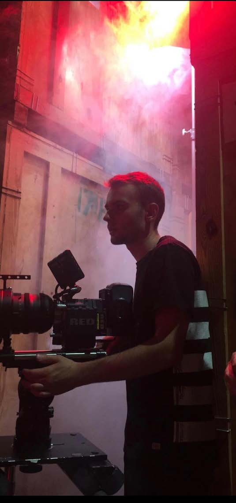

Ivan
Sarasota,Fn
Ivan
Zakharenko
F I L M M A K E R
Contact
+ 380981172914Zakharenko.dp@gmail.com
Kiev,UkraineSarasota,Fn
Profile
I am FILMMAKER available for projects locally and internationally. Extremely motivated, innovative, ambitious in creating pure cinematic experience, constantly developing my skills, grow professionally and do everything for the sake of art.
Knowledge of different roles in Filmmaking (Directing, Producing, DP, Editing, Production design.)
English, Ukrainian, Russian languages.
Driving license category B
Experience
5Th chanel " П'ятый поверх "
Journalist , director | 2016
- Managed one episode.